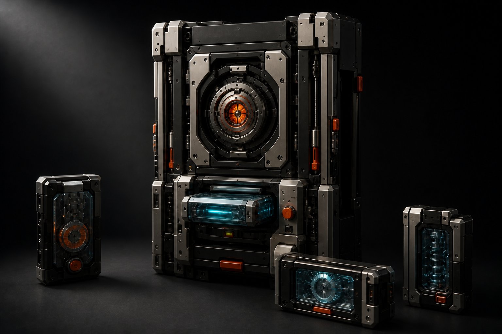
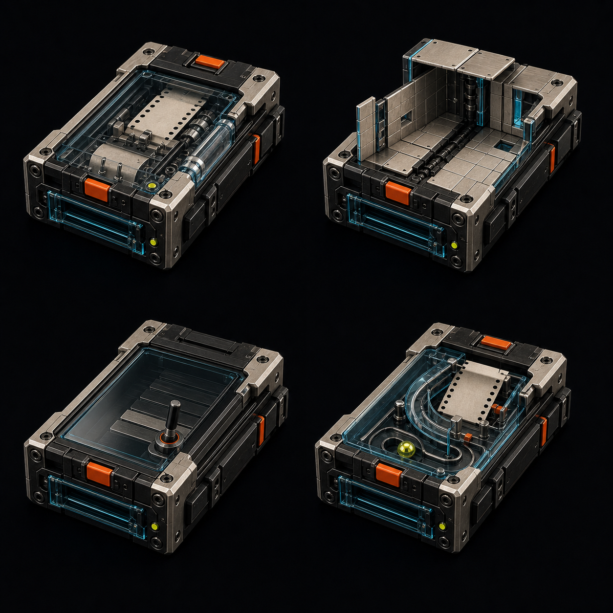
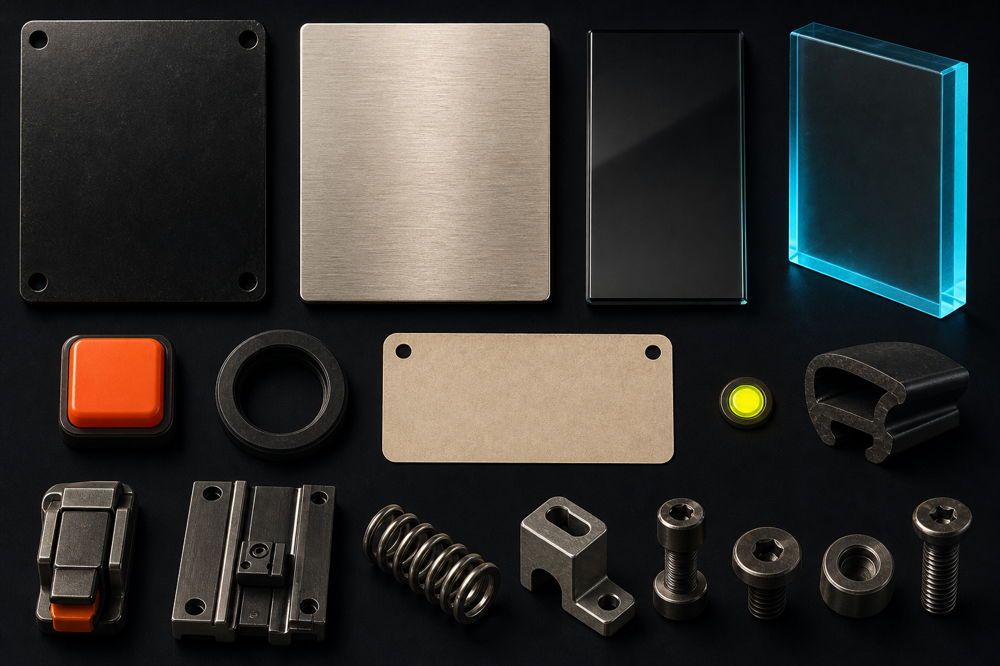
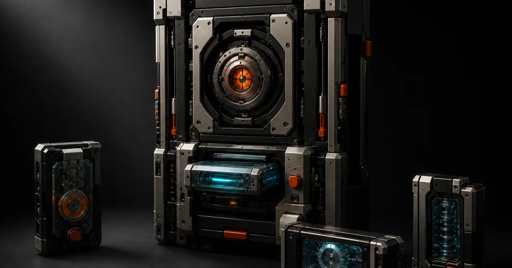

The Vitek Machine selected asset package
Locked direction: A supplies the whole-machine silhouette, B the modular construction, C the slot interaction, and D only the reward timing. Assembly drag → snap → seat/eject remains the product grammar; image-to-video remains rejected.
These source images guide procedural geometry; they are reference material, not final meshes. Critical project copy remains real HTML or SVG.
Selected references



Production derivatives

Favicon surfaces
390px review and deferrals
The single-column 390px layout keeps every source, crop, caption and icon inside the viewport. Desktop uses bounded fluid grids with no horizontal overflow or external request.
Deferred because the next scene has not proven a need:
- wordmark, decals and sprites;
- portrait and extra cartridge rasters;
- glTF and app integration.